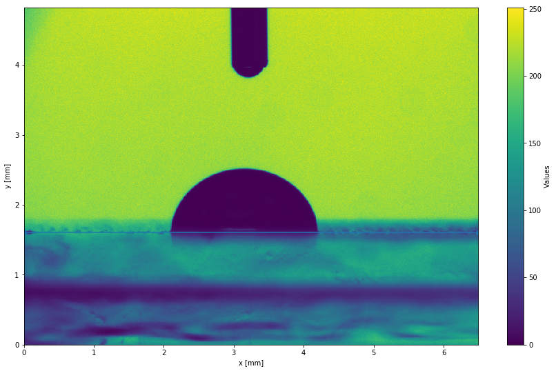
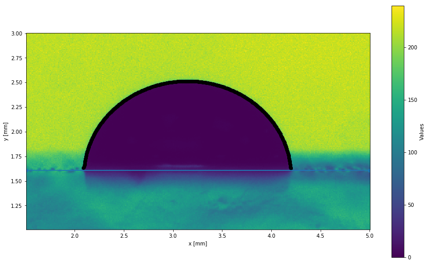
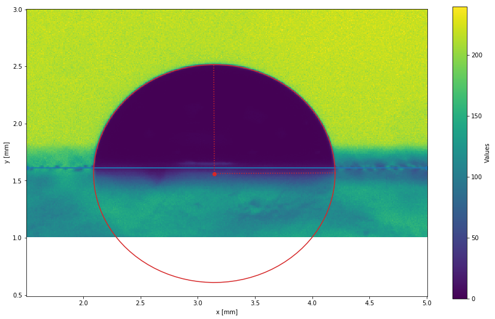
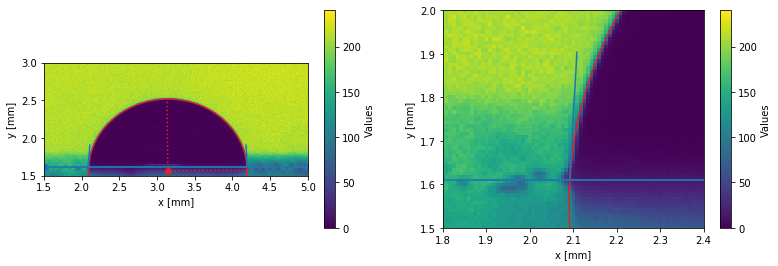

Drop Shape analysis using pyDSA (image)
You can get the python script detailled in this page here: script.py.
And an archive containing the script and the data here: archive.tar.gz, archive.zip.
Installing pyDSA
Dependencies
You will first need to install IMTreatment by downloading the package here, extracting it and installing it with:
python3 setup.py installpyDSA also use OpenCV for edge detection, so you will need it installed as well.
Install pyDSA
Download the sources here, extract, and install them:
python3 setup.py installpyDSA have some dependencies (matplotlib, scipy, numpy, …) that should be installed automatically.
Importing an image
import pyDSA as dsa
import matplotlib.pyplot as plt
plt.rcParams['figure.figsize'] = 10, 6
# Import an image
im = dsa.import_from_image('data/image.bmp', dx=1/120, dy=1/120, unit_x='mm', unit_y='mm')
# Display it
plt.figure()
im.display()
plt.show()
Scaling
Here we scaled the image during the import (using the dx and dy parameters),
but you can also scale the image afterwards, using the im.scale_interactive() interactive function.
This function ask you to select two points on the image and to input the real distance (in mm for example) separating them. It then scale the image accordingly.
The scaling is then stored in an .info file alongside the image, and will be automatically imported the next time you want to work with this image.
Focusing on the drop
im.crop(intervx=[1.5, 5], intervy=[1, 3], inplace=True)
# Display
plt.figure()
im.display()
plt.show()Setting the baseline
pyDSA provides an interactive function im.choose_baseline() to interactively set the baseline.
It will display the drop image and ask you to put baseline points by clicking on the image.
Here, we are gonna use the non-interactive function im.set_baseline() to set the baseline.
im.set_baseline(pt1=[2, 1.61], pt2=[4.5, 1.61])
# Display
plt.figure()
im.display()
plt.show()The baseline is automatically displayed as a blue line on the drop image.
Like the scaling, the baseline position is stored in the .info file, and automatically loaded.
Detecting the edges
The drop edge is detected using the Canny edge detection algorithm from OpenCV.
edge = im.edge_detection()
# Display the edge
plt.figure()
im.display()
edge.display()
plt.show()If the edge detection is not good enough, the edge_detection function provides several optional arguments that can help you get the edges you want.
Please refer to the inline documentation of this function if you want to know more about this.
Another method, that detects the edges from contour map is also available:
edge_cont = im.edge_detection_contour(level=.25)
# Display the edge
plt.figure()
im.display()
edge_cont.display()
plt.show()
Fitting the edge
Computing the contact angles will necessitates the edges to be fitted by a curve of some kind. pyDSA provide several ways of doing that, depending if you are studying a drop on a dry surface: - Spline fitting - Circle fitting - Ellipse fitting
or a drop on a lubricated surface: - Spline fitting - Circles fitting
Spline fitting
The drop edges are fitted with two splines. This solution is relatively generic and should work for any kind of drops.
sfit = edge.fit_spline()
# Display the edge
plt.figure()
im.display()
sfit.display()
plt.show()The edge fitting is displayed in orange.
Spline fittings allow to detect the position of the triple point if present, using the sfit.detect_triple_points().
Circle fitting
The drop edges are fitted with a circle. This solution is only usable for small drop deposited on surfaces.
cfit = edge.fit_circle()
# Display the edge
plt.figure()
im.display()
cfit.display()
plt.show()
Ellipse fitting
The drop edges are fitted with an ellipse. This solution is generally good, as soon as the drop is on a dry surface. It also generally gives less scattered contact angles than the spline fitting.
elfit = edge.fit_ellipse()
# Display the edge
plt.figure()
im.display()
elfit.display()
plt.show()Multiple circles fitting
This method fits three circles to the drop edges: one for the drop and two for the wetting ridges. This method is only valid for drops on lubricated surfaces.
As the present image does not present well-defined wetting ridges, the follwing result is just provided as an illustration.
csfit = edge_cont.fit_circles(triple_pts=[[2.1, 1.7], [4.2, 1.7]])
# Display the edge
plt.figure()
im.display()
csfit.display()
plt.show()
Computing the contact angles
Any of the previously presented fitting can be used to compute the contact angles of the drop. If a triple point is present, the contact angles at the triple points are also computed.
elfit.compute_contact_angle()
print('Contact angles: {}'.format(elfit.thetas))
# Display the edge
fig, axs = plt.subplots(1, 2, figsize=(13, 4))
plt.sca(axs[0])
im.display()
elfit.display()
plt.ylim(1.5, 3)
# Zoom
plt.sca(axs[1])
im.display()
elfit.display()
plt.ylim(1.5, 2)
plt.xlim(1.8, 2.4)
plt.show()Contact angles: [86.69466024 93.02280966]

Dealing with videos
pyDSA can directly import videos and automatically analyze them in batch. This is the subject of the tutorial available here.
How does it works ?
If you want to know more about how pyDSA works, you can take a look at the drop shape analysis tutorial, or go through the code (on your machine, or here).